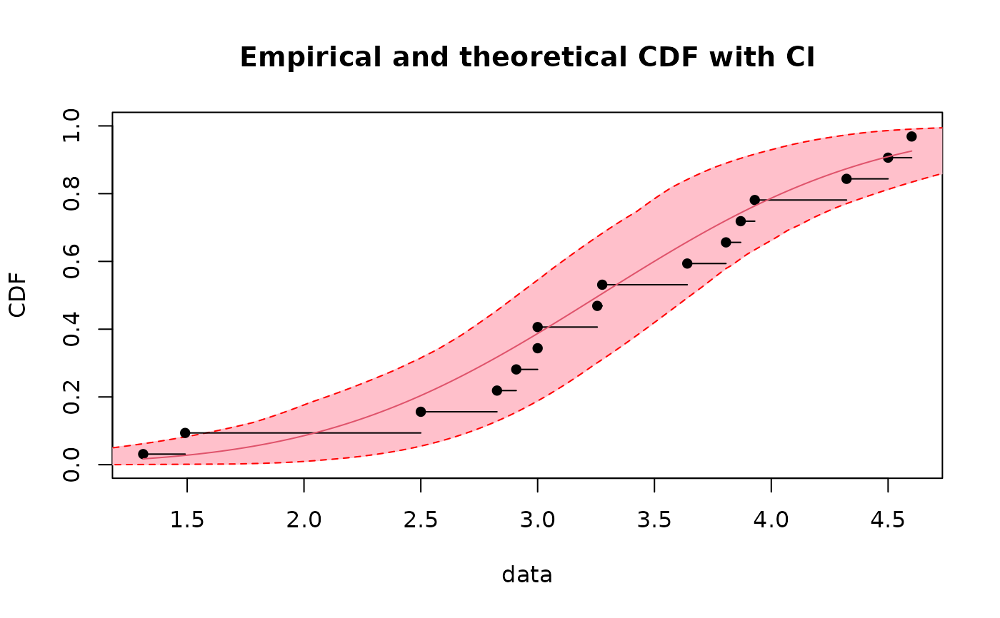

Quantile estimation from a fitted distribution
quantile.RdQuantile estimation from a fitted distribution, optionally with confidence intervals calculated from the bootstrap result.
Usage
# S3 method for fitdist
quantile(x, probs = seq(0.1, 0.9, by=0.1), ...)
# S3 method for fitdistcens
quantile(x, probs = seq(0.1, 0.9, by=0.1), ...)
# S3 method for bootdist
quantile(x, probs = seq(0.1, 0.9, by=0.1),CI.type = "two.sided",
CI.level = 0.95, ...)
# S3 method for bootdistcens
quantile(x, probs = seq(0.1, 0.9, by=0.1),CI.type = "two.sided",
CI.level = 0.95, ...)
# S3 method for quantile.fitdist
print(x, ...)
# S3 method for quantile.fitdistcens
print(x, ...)
# S3 method for quantile.bootdist
print(x, ...)
# S3 method for quantile.bootdistcens
print(x, ...)Arguments
- x
An object of class
"fitdist","fitdistcens","bootdist","bootdistcens"or"quantile.fitdist","quantile.fitdistcens","quantile.bootdist","quantile.bootdistcens"for theprintgeneric function.- probs
A numeric vector of probabilities with values in [0, 1] at which quantiles must be calculated.
- CI.type
Type of confidence intervals : either
"two.sided"or one-sided intervals ("less"or"greater").- CI.level
The confidence level.
- ...
Further arguments to be passed to generic functions.
Details
Quantiles of the parametric distribution are calculated for
each probability specified in probs, using the estimated parameters.
When used with an object of class "bootdist" or "bootdistcens", percentile
confidence intervals and medians etimates
are also calculated from the bootstrap result.
If CI.type is two.sided,
the CI.level two-sided confidence intervals of quantiles are calculated.
If CI.type is less or greater,
the CI.level one-sided confidence intervals of quantiles are calculated.
The print functions show the estimated quantiles with percentile confidence intervals
and median estimates when a bootstrap resampling has been done previously,
and the number of bootstrap iterations
for which the estimation converges if it is inferior to the whole number of bootstrap iterations.
Value
quantile returns a list with 2 components (the first two described below) when called with an object
of class "fitdist" or "fitdistcens" and 8 components (described below)
when called with an object of class
"bootdist" or "bootdistcens" :
- quantiles
a dataframe containing the estimated quantiles for each probability value specified in the argument
probs(one row, and as many columns as values inprobs).- probs
the numeric vector of probabilities at which quantiles are calculated.
- bootquant
A data frame containing the bootstraped values for each quantile (many rows, as specified in the call to
bootdistin the argumentniter, and as many columns as values inprobs)- quantCI
If
CI.typeistwo.sided, the two bounds of theCI.levelpercent two.sided confidence interval for each quantile (two rows and as many columns as values inprobs). IfCI.typeisless, right bound of theCI.levelpercent one.sided confidence interval for each quantile (one row). IfCI.typeisgreater, left bound of theCI.levelpercent one.sided confidence interval for each quantile (one row).- quantmedian
Median of bootstrap estimates (per probability).
- CI.type
Type of confidence interval: either
"two.sided"or one-sided intervals ("less"or"greater").- CI.level
The confidence level.
- nbboot
The number of samples drawn by bootstrap.
- nbconverg
The number of iterations for which the optimization algorithm converges.
See also
fitdist, bootdist, fitdistcens, bootdistcens and CIcdfplot.
References
Delignette-Muller ML and Dutang C (2015), fitdistrplus: An R Package for Fitting Distributions. Journal of Statistical Software, 64(4), 1-34.
Examples
# (1) Fit of a normal distribution on acute toxicity log-transformed values of
# endosulfan for nonarthropod invertebrates, using maximum likelihood estimation
# to estimate what is called a species sensitivity distribution
# (SSD) in ecotoxicology, followed by estimation of the 5, 10 and 20 percent quantile
# values of the fitted distribution, which are called the 5, 10, 20 percent hazardous
# concentrations (HC5, HC10, HC20) in ecotoxicology, followed with calculations of their
# confidence intervals with various definitions, from a small number of bootstrap
# iterations to satisfy CRAN running times constraint.
# For practical applications, we recommend to use at least niter=501 or niter=1001.
#
data(endosulfan)
ATV <- subset(endosulfan, group == "NonArthroInvert")$ATV
log10ATV <- log10(subset(endosulfan, group == "NonArthroInvert")$ATV)
fln <- fitdist(log10ATV, "norm")
quantile(fln, probs = c(0.05, 0.1, 0.2))
#> Estimated quantiles for each specified probability (non-censored data)
#> p=0.05 p=0.1 p=0.2
#> estimate 1.744227 2.080093 2.4868
bln <- bootdist(fln, bootmethod="param", niter=101)
quantile(bln, probs = c(0.05, 0.1, 0.2))
#> (original) estimated quantiles for each specified probability (non-censored data)
#> p=0.05 p=0.1 p=0.2
#> estimate 1.744227 2.080093 2.4868
#> Median of bootstrap estimates
#> p=0.05 p=0.1 p=0.2
#> estimate 1.831458 2.128334 2.515952
#>
#> two-sided 95 % CI of each quantile
#> p=0.05 p=0.1 p=0.2
#> 2.5 % 1.206058 1.615810 2.040136
#> 97.5 % 2.372660 2.617113 2.937556
quantile(bln, probs = c(0.05, 0.1, 0.2), CI.type = "greater")
#> (original) estimated quantiles for each specified probability (non-censored data)
#> p=0.05 p=0.1 p=0.2
#> estimate 1.744227 2.080093 2.4868
#> Median of bootstrap estimates
#> p=0.05 p=0.1 p=0.2
#> estimate 1.831458 2.128334 2.515952
#>
#> left bound of one-sided 95 % CI of each quantile
#> p=0.05 p=0.1 p=0.2
#> 5 % 1.299871 1.64396 2.126053
quantile(bln, probs = c(0.05, 0.1, 0.2), CI.level = 0.9)
#> (original) estimated quantiles for each specified probability (non-censored data)
#> p=0.05 p=0.1 p=0.2
#> estimate 1.744227 2.080093 2.4868
#> Median of bootstrap estimates
#> p=0.05 p=0.1 p=0.2
#> estimate 1.831458 2.128334 2.515952
#>
#> two-sided 90 % CI of each quantile
#> p=0.05 p=0.1 p=0.2
#> 5 % 1.299871 1.643960 2.126053
#> 95 % 2.297746 2.565286 2.894080
# (2) Draw of 95 percent confidence intervals on quantiles of the
# previously fitted distribution
#
cdfcomp(fln)
q1 <- quantile(bln, probs = seq(0,1,length=101))
points(q1$quantCI[1,],q1$probs,type="l")
points(q1$quantCI[2,],q1$probs,type="l")
# (2b) Draw of 95 percent confidence intervals on quantiles of the
# previously fitted distribution
# using the NEW function CIcdfplot
#
CIcdfplot(bln, CI.output = "quantile", CI.fill = "pink")

# (3) Fit of a distribution on acute salinity log-transformed tolerance
# for riverine macro-invertebrates, using maximum likelihood estimation
# to estimate what is called a species sensitivity distribution
# (SSD) in ecotoxicology, followed by estimation of the 5, 10 and 20 percent quantile
# values of the fitted distribution, which are called the 5, 10, 20 percent hazardous
# concentrations (HC5, HC10, HC20) in ecotoxicology, followed with calculations of
# their confidence intervals with various definitions.
# from a small number of bootstrap iterations to satisfy CRAN running times constraint.
# For practical applications, we recommend to use at least niter=501 or niter=1001.
#
data(salinity)
log10LC50 <-log10(salinity)
flncens <- fitdistcens(log10LC50,"norm")
quantile(flncens, probs = c(0.05, 0.1, 0.2))
#> Estimated quantiles for each specified probability (censored data)
#> p=0.05 p=0.1 p=0.2
#> estimate 1.11584 1.194121 1.288913
blncens <- bootdistcens(flncens, niter = 101)
quantile(blncens, probs = c(0.05, 0.1, 0.2))
#> (original) estimated quantiles for each specified probability (censored data)
#> p=0.05 p=0.1 p=0.2
#> estimate 1.11584 1.194121 1.288913
#> Median of bootstrap estimates
#> p=0.05 p=0.1 p=0.2
#> estimate 1.127552 1.204485 1.299218
#>
#> two-sided 95 % CI of each quantile
#> p=0.05 p=0.1 p=0.2
#> 2.5 % 1.057448 1.138889 1.239646
#> 97.5 % 1.203538 1.270419 1.355852
quantile(blncens, probs = c(0.05, 0.1, 0.2), CI.type = "greater")
#> (original) estimated quantiles for each specified probability (censored data)
#> p=0.05 p=0.1 p=0.2
#> estimate 1.11584 1.194121 1.288913
#> Median of bootstrap estimates
#> p=0.05 p=0.1 p=0.2
#> estimate 1.127552 1.204485 1.299218
#>
#> left bound of one-sided 95 % CI of each quantile
#> p=0.05 p=0.1 p=0.2
#> 5 % 1.062249 1.145186 1.245616
quantile(blncens, probs = c(0.05, 0.1, 0.2), CI.level = 0.9)
#> (original) estimated quantiles for each specified probability (censored data)
#> p=0.05 p=0.1 p=0.2
#> estimate 1.11584 1.194121 1.288913
#> Median of bootstrap estimates
#> p=0.05 p=0.1 p=0.2
#> estimate 1.127552 1.204485 1.299218
#>
#> two-sided 90 % CI of each quantile
#> p=0.05 p=0.1 p=0.2
#> 5 % 1.062249 1.145186 1.245616
#> 95 % 1.195896 1.266786 1.346183